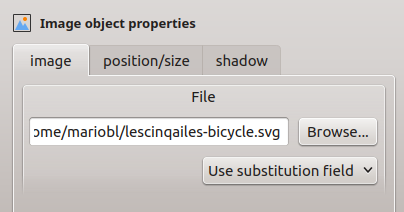

Editing Object Properties¶
Most object properties can be modified through the object editor sidebar, illustrated below. To use the object editor, a single object must first be selected. See Selecting Objects.

The object editor will contain a subset of the following tabbed sections, depending on object type:
Text Tabbed Section (Text objects)¶
This section contains a small editor for changing the content of a text object. It also contains a dropdown menu of available document merge keys, that can be inserted into text.
Image Tabbed Section (Image objects)¶
This section contains a file entry with preview to select image files. The browse button can be used to easily locate image files. Alternatively, a document merge key can be used instead to provide a filename at print time.
Data Tabbed Section (Barcode objects)¶
This section contains a text entry to enter literal barcode data. Alternatively, a document merge key can be used to provide this data at print time.
Style Tabbed Section (Text objects)¶
This section contains controls to select text properties, including font family, font size, font weight, color, and text justification.
Style Tabbed Section (Barcode objects)¶
This section contains controls to select barcode properties, including barcode style, color, whether to print text, and whether to include a checksum digit.
Line Tabbed Section¶
This section contains controls to select properties of lines and outlines. These properties include line width and color.
Fill Tabbed Section¶
This section contains controls to select fill properties of box and ellipse objects. Currently the only fill property is fill color.
Size Tabbed Section (All except line objects)¶
This section contains controls to select the width and height of an object. A checkbox is provided, so that the current aspect ratio can be locked while manipulating the width and height controls. Image objects also provide a button to reset the size to the image’s natural size (Assumes 72DPI).
Size Tabbed Section (Line objects)¶
This section contains controls to select the length and angle of a line object.
Position Tabbed Section¶
This section contains controls to change the position of an object.
Shadow Tabbed Section (All except barcode objects)¶
This section contains controls to add a shadow to an object.
Other Manipulations of Objects¶
Objects can also be manipulated in the following ways.
Moving and Resizing Objects¶
Objects can be moved by simply clicking on a selected object and dragging the object to its new location. If the object is part of an aggregate selection, all objects in the selection will move with the object being dragged, maintaining their relative positions to one another. If no object is selected, clicking on an object will create a new selection containing that object. See Selecting Objects.
A selected object can be resized by clicking one of its resize handle and dragging it to obtain the new size.
Changing Stacking Order¶
Stacking order refers to relative position in the z-axis of objects. That is when objects overlap, which object will appear on top of the other. By default, newer objects will appear above older objects. To change this order, select one or more objects and choose Objects ➡ Order ➡ Bring to Front to raise the selection to the top of the stacking order, or choose Objects ➡ Order ➡ Send to Back to lower the selection to the bottom of the stacking order. These menuitems are also available by right-clicking the display area when there is a non-empty selection.
Rotating and Flipping Objects¶
Objects can be rotated 90 degrees in either direction, or flipped horizontally or vertically, by choosing the appropriate menuitem in the Objects ➡ Rotate/Flip sub-menu. These menuitems are also available by right-clicking the display area when there is a non-empty selection.
Note
This feature could be useful when you are designing CD box inlays. For the spine caption, you need vertical aligned text. After you have created a basic text box, choose Objects ➡ Rotate/Flip to rotate the text box according to your needs.
Aligning Objects¶
Objects can be aligned horizontally or vertically, relative to one another, or relative to the center line of the label, by choosing the appropriate menuitem from the Objects ➡ Align Horizontal or Objects ➡ Align Vertical sub-menus. These menuitems are also available by right-clicking the display area when there is a non-empty selection.
Using the Property Bar¶
The property bar can be used to change some common properties of objects en-masse. These properties include font family, font size, font weight, text alignment, text color, fill color, line or outline color, and line width. The property bar also controls the defaults for these properties for any newly created objects.